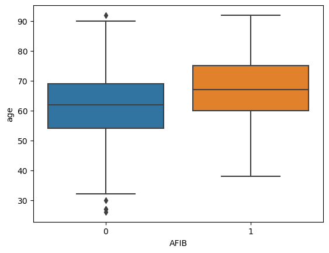

import pandas as pd
import numpy as npMetadata
Course: DS 5100
Module: 06 Pandas
Topic: HW Myocardial Infarction Analytics with Pandas
Author: R.C. Alvarado (adapted)
Date: 7 July 2023Student Info
- Name:
- Net UD:
- URL of this file in GitHub:
Instructions
In your private course repo on Rivanna, use this Jupyter notebook and the data file described to write code that performs the tasks below.
Save your notebook in the M06 directory.
Remember to add and commit these files to your repo.
Then push your commits to your repo on GitHib.
Be sure to fill out the Student Info block above.
To submit your homework, save the notebook as a PDF and upload it to GradeScope, following the instructions.
TOTAL POINTS: 12
Overview
In this homework, you will be working with the Myocardial Infarction (MI) Complications Data Set housed at UCI.
A myocardial infarction is commonly called a heart attack.
You may Read about the dataset in the Data Description File (DDF).
You will work with some of the columns (aka features).
A subset of these could be predictors in an ML model, while others could be outcome variables.
The section Attribute Information in the DDF provides details.
Setting Up
Prepare the Data
Read in the dataset from the UCI Machine Learning Repository.
Use Pandas’ read_csv() function, giving the path to the dataset as an argument.
There is no header in this data, so pass a second argument header=None.
path_to_data = "http://archive.ics.uci.edu/ml/machine-learning-databases/00579/MI.data"Task 1
(1 PT)
Import the data into a dataframe and then print the number of records in the dataset
# CODE HEREdf = pd.read_csv(path_to_data, header=None)len(df)1700Task 2
(1 PT)
Show the first three records in the dataset
# CODE HEREdf.iloc[:3]| 0 | 1 | 2 | 3 | 4 | 5 | 6 | 7 | 8 | 9 | ... | 114 | 115 | 116 | 117 | 118 | 119 | 120 | 121 | 122 | 123 | |
|---|---|---|---|---|---|---|---|---|---|---|---|---|---|---|---|---|---|---|---|---|---|
| 0 | 1 | 77 | 1 | 2 | 1 | 1 | 2 | ? | 3 | 0 | ... | 0 | 0 | 0 | 0 | 0 | 0 | 0 | 0 | 0 | 0 |
| 1 | 2 | 55 | 1 | 1 | 0 | 0 | 0 | 0 | 0 | 0 | ... | 0 | 0 | 0 | 0 | 0 | 0 | 0 | 0 | 0 | 0 |
| 2 | 3 | 52 | 1 | 0 | 0 | 0 | 2 | ? | 2 | 0 | ... | 0 | 0 | 0 | 0 | 0 | 0 | 0 | 0 | 0 | 0 |
3 rows × 124 columns
Working with AGE
The second column contains patient age.
If your dataframe is named df, you can reference the column with: df[1].
Generally the field names will be strings and you can use df['age'] to access field age, as an example).
Task 3
(1 PT)
One complication: missing values are filled with ? which will cause problems (e.g., stats can’t be computed easily).
Count the number of records in df[1] containing ?.
# CODE HEREdf| 0 | 1 | 2 | 3 | 4 | 5 | 6 | 7 | 8 | 9 | ... | 114 | 115 | 116 | 117 | 118 | 119 | 120 | 121 | 122 | 123 | |
|---|---|---|---|---|---|---|---|---|---|---|---|---|---|---|---|---|---|---|---|---|---|
| 0 | 1 | 77 | 1 | 2 | 1 | 1 | 2 | ? | 3 | 0 | ... | 0 | 0 | 0 | 0 | 0 | 0 | 0 | 0 | 0 | 0 |
| 1 | 2 | 55 | 1 | 1 | 0 | 0 | 0 | 0 | 0 | 0 | ... | 0 | 0 | 0 | 0 | 0 | 0 | 0 | 0 | 0 | 0 |
| 2 | 3 | 52 | 1 | 0 | 0 | 0 | 2 | ? | 2 | 0 | ... | 0 | 0 | 0 | 0 | 0 | 0 | 0 | 0 | 0 | 0 |
| 3 | 4 | 68 | 0 | 0 | 0 | 0 | 2 | ? | 2 | 0 | ... | 0 | 0 | 0 | 0 | 0 | 0 | 1 | 0 | 0 | 0 |
| 4 | 5 | 60 | 1 | 0 | 0 | 0 | 2 | ? | 3 | 0 | ... | 0 | 0 | 0 | 0 | 0 | 0 | 0 | 0 | 0 | 0 |
| ... | ... | ... | ... | ... | ... | ... | ... | ... | ... | ... | ... | ... | ... | ... | ... | ... | ... | ... | ... | ... | ... |
| 1695 | 1696 | 77 | 0 | 0 | 4 | 2 | 1 | ? | 2 | 0 | ... | 0 | 0 | 1 | 0 | 1 | 0 | 0 | 0 | 0 | 3 |
| 1696 | 1697 | 70 | 0 | 0 | 6 | 2 | 1 | ? | 2 | 0 | ... | 0 | 0 | 0 | 0 | 0 | 0 | 0 | 0 | 0 | 1 |
| 1697 | 1698 | 55 | 1 | 3 | 6 | 2 | 2 | ? | 0 | 0 | ... | 0 | 0 | 0 | 0 | 0 | 0 | 0 | 1 | 0 | 6 |
| 1698 | 1699 | 79 | 0 | 2 | 2 | 2 | 1 | ? | 2 | 0 | ... | 0 | 0 | 0 | 1 | 0 | 0 | 0 | 0 | 0 | 1 |
| 1699 | 1700 | 63 | 1 | 2 | ? | ? | ? | ? | 2 | 0 | ... | 0 | 0 | 0 | 0 | 0 | 0 | 0 | 0 | 0 | 1 |
1700 rows × 124 columns
len(df.loc[df[1] == '?', 1])8# df.iloc[:, 1].str.count(r'\?').sum()# df[1].str.count(r'\?').sum()Task 4
(1 PT)
Replace '?' with np.nan in the age column.
# CODE HEREdf.loc[df[1] == '?', 1] = np.nan Task 5
(1 PT)
Print the number of records containing np.nan in the column df[1] of your dataframe.
# CODE HEREdf[df[1].isna()]| 0 | 1 | 2 | 3 | 4 | 5 | 6 | 7 | 8 | 9 | ... | 114 | 115 | 116 | 117 | 118 | 119 | 120 | 121 | 122 | 123 | |
|---|---|---|---|---|---|---|---|---|---|---|---|---|---|---|---|---|---|---|---|---|---|
| 70 | 71 | NaN | 1 | 0 | 3 | 2 | 2 | ? | 2 | 0 | ... | 0 | 0 | 0 | 0 | 0 | 0 | 1 | 0 | 0 | 0 |
| 103 | 104 | NaN | 1 | 0 | 3 | 2 | 2 | ? | 0 | 0 | ... | 0 | 0 | 0 | 0 | 0 | 0 | 0 | 0 | 0 | 0 |
| 484 | 485 | NaN | 0 | 2 | 6 | 2 | 1 | ? | 2 | 0 | ... | 0 | 0 | 0 | 0 | 0 | 0 | 0 | 0 | 0 | 0 |
| 1200 | 1201 | NaN | 1 | 0 | 0 | 0 | 0 | ? | 0 | 0 | ... | 0 | 0 | 1 | 0 | 0 | 0 | 0 | 0 | 0 | 0 |
| 1291 | 1292 | NaN | 0 | 0 | 6 | 2 | 1 | ? | 2 | 0 | ... | 0 | 0 | 0 | 0 | 0 | 0 | 0 | 0 | 0 | 0 |
| 1303 | 1304 | NaN | 1 | 1 | 3 | 2 | 1 | ? | 2 | 0 | ... | 0 | 0 | 0 | 0 | 0 | 0 | 1 | 0 | 0 | 0 |
| 1359 | 1360 | NaN | 1 | 0 | 0 | 0 | 0 | ? | 0 | 0 | ... | 0 | 0 | 0 | 0 | 0 | 0 | 0 | 0 | 0 | 0 |
| 1390 | 1391 | NaN | 1 | 2 | 6 | 2 | 1 | ? | 2 | 0 | ... | 0 | 0 | 0 | 0 | 0 | 0 | 0 | 0 | 1 | 0 |
8 rows × 124 columns
df[df[1].isna()]| 0 | 1 | 2 | 3 | 4 | 5 | 6 | 7 | 8 | 9 | ... | 114 | 115 | 116 | 117 | 118 | 119 | 120 | 121 | 122 | 123 | |
|---|---|---|---|---|---|---|---|---|---|---|---|---|---|---|---|---|---|---|---|---|---|
| 70 | 71 | NaN | 1 | 0 | 3 | 2 | 2 | ? | 2 | 0 | ... | 0 | 0 | 0 | 0 | 0 | 0 | 1 | 0 | 0 | 0 |
| 103 | 104 | NaN | 1 | 0 | 3 | 2 | 2 | ? | 0 | 0 | ... | 0 | 0 | 0 | 0 | 0 | 0 | 0 | 0 | 0 | 0 |
| 484 | 485 | NaN | 0 | 2 | 6 | 2 | 1 | ? | 2 | 0 | ... | 0 | 0 | 0 | 0 | 0 | 0 | 0 | 0 | 0 | 0 |
| 1200 | 1201 | NaN | 1 | 0 | 0 | 0 | 0 | ? | 0 | 0 | ... | 0 | 0 | 1 | 0 | 0 | 0 | 0 | 0 | 0 | 0 |
| 1291 | 1292 | NaN | 0 | 0 | 6 | 2 | 1 | ? | 2 | 0 | ... | 0 | 0 | 0 | 0 | 0 | 0 | 0 | 0 | 0 | 0 |
| 1303 | 1304 | NaN | 1 | 1 | 3 | 2 | 1 | ? | 2 | 0 | ... | 0 | 0 | 0 | 0 | 0 | 0 | 1 | 0 | 0 | 0 |
| 1359 | 1360 | NaN | 1 | 0 | 0 | 0 | 0 | ? | 0 | 0 | ... | 0 | 0 | 0 | 0 | 0 | 0 | 0 | 0 | 0 | 0 |
| 1390 | 1391 | NaN | 1 | 2 | 6 | 2 | 1 | ? | 2 | 0 | ... | 0 | 0 | 0 | 0 | 0 | 0 | 0 | 0 | 1 | 0 |
8 rows × 124 columns
df[df[1].isna()].shape[0]8Another complication
Another complication: the age data is saved as strings, and there are the null values.
Here’s an example:
# inspect first element
df[1].iloc[0]
'77'# check the column type
df[1].dtype
dtype('O')To convert the column to numeric, we can use apply() with a lambda function.
If the type is string, we cast to numeric, e.g. float or int, otherwise it’s null and we leave things alone.
isinstance(x, str) checks if x is a string, returning a bool.
Review this code for understanding:
df[1] = df[1].apply(lambda x: float(x) if isinstance(x, str) else x)Task 6
(1 PT)
Run the lambda function above, then show the data type of age is no longer string type.
# CODE HEREdf[1] = df[1].apply(lambda x: float(x) if isinstance(x, str) else x)df[1].info()<class 'pandas.core.series.Series'>
RangeIndex: 1700 entries, 0 to 1699
Series name: 1
Non-Null Count Dtype
-------------- -----
1692 non-null float64
dtypes: float64(1)
memory usage: 13.4 KBTask 7
(1 PT)
Compute the median age.
# CODE HEREdf[1].median()63.0Working with GENDER
The third column contains patient gender.
Again, since indexing starts at zero, you’ll reference df[2].
Task 8
(1 PT)
Print the frequency AND percentage of each gender.
Hint: The function you’ll use to compute frequencies will take an argument to compute normalized values, which may be converted to percentages.
# CODE HEREdf[2].value_counts()2
1 1065
0 635
Name: count, dtype: int64df[2].value_counts(normalize=True) * 1002
1 62.647059
0 37.352941
Name: proportion, dtype: float64Working with Essential Hypertension (EH)
Reference this column with df[8].
Task 9
(1 PT)
Enter the most frequent value.
# CODE HEREdf[8].value_counts().head(1).index[0]'2'df[8].value_counts().idxmax()'2'Working with Atrial Fibrillation (AFIB)
Reference this column with df[112].
AFIB is one of the complications and outcomes of myocardial infarction.
Task 10
(1 PT)
Print the number of AFIB cases.
Note that 1 means there is a case.
# CODE HEREdf[112].sum()170Combining Age and AFIB
Task 11
(1 PT)
Construct a new dataframe df2 containing only the columns for AGE and AFIB.
Recall that AGE is in df[1] and AFIB is in df[112].
Print the shape of this dataframe.
Hint: you can pass a list of column names to the dataframe indexer to get a dataframe with a subset of columns.
# CODE HEREdf2 = df[[1, 112]]df2.shape(1700, 2)Plotting
We are going to plot AGE and AFIB, so renaming the columns to strings will make our visualization more readable.
You can rename columns using the dataframe .rename() method, which takes a dictionary as an argument of the form:
{
current_column_name1: new_column_name1,
...
current_column_nameN: new_column_nameN
}Rename column 1 to 'age' and 2 to 'AFIB' for df2.
df2 = df2.rename(columns={1:'age', 112:'AFIB'})df2.head()| age | AFIB | |
|---|---|---|
| 0 | 77.0 | 0 |
| 1 | 55.0 | 0 |
| 2 | 52.0 | 0 |
| 3 | 68.0 | 0 |
| 4 | 60.0 | 0 |
Task 12
(1 PT)
Dispplay a boxplot with AFIB on the x-axis and Age on the y-axis
Use the the boxplot() function from the seaborn package for this.
Here is the documentation, but all you need to do is this:
from seaborn import boxplot# CODE HEREfrom seaborn import boxplotboxplot(x=df2.AFIB, y=df2.age);
Ungraded question: What do you notice about the difference in age distributions between AFIB and non-AFIB groups?